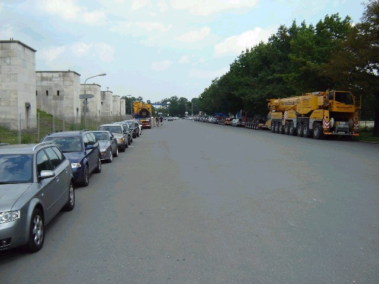
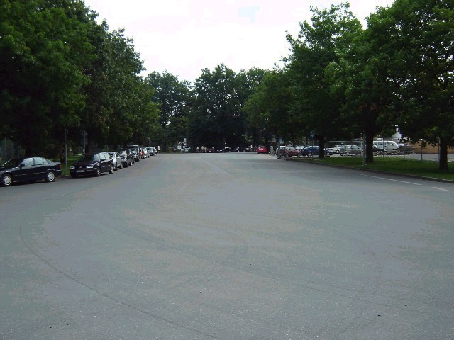
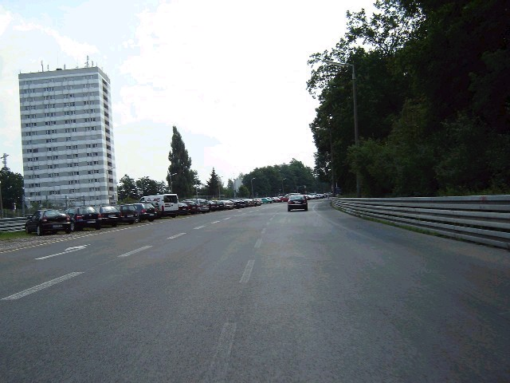
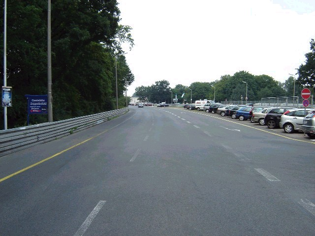
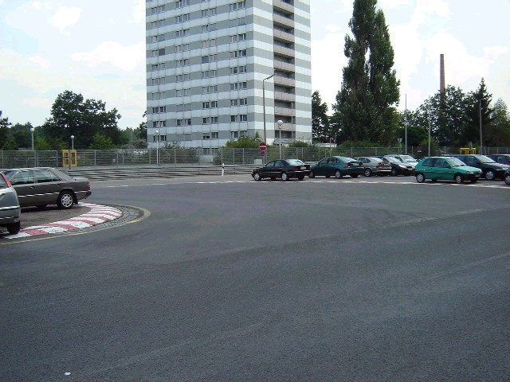
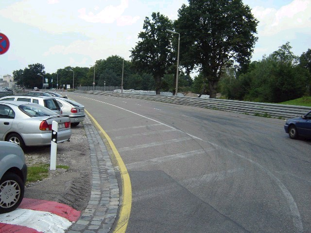
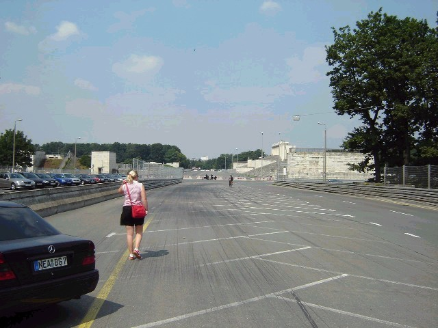
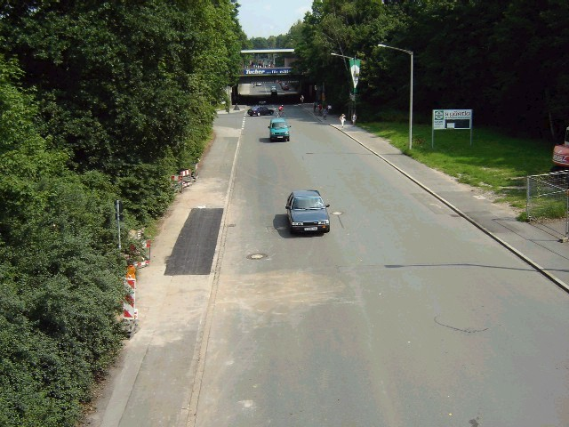

Numbers on the map represent the location of where the photos were taken. Click the hyperlinks above to view the photographs.
Norisring - Start and Turn One Hairpin
|| Contents | Paddock and Grandstands | Start and Turn 1 | Turn 2 to Finish || Home ||
Numbers on the map represent the location of where the photos were taken. Click the
hyperlinks above to view the photographs.
Return to racingcircuits.net's Photo Archive Main Index

7. Looking back from the second corner of the circuit used in 1947 and
1949.

8. Looking forward from the second corner of the circuit used in 1947 and
1949.

9. Looking towards the first corner.

10. Looking back from the first corner.

11. The first corner.

12. Coming out of the first corner.

13. Just before the second corner.

14. A part of the circuit used in 1947 and 1949.
©Roelard Smit. Reproduced here with kind permission.